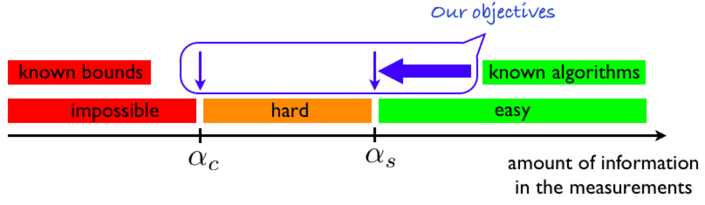

ベイズ統計学とスピングラス
誤り訂正符号を題材にして
A Blog Entry on Bayesian Computation by an Applied Mathematician
$$ %%% 汎用コード列%%% 演算子
%%% 線型代数学%%% 複素解析学 %%% 集合と位相
%%% 形式言語理論 %%% Graph Theory
%%% 多様体 %%% 代数 %%% 代数的位相幾何学 %%% 微分幾何学 %%% 函数解析 %%% 積分論%%% Fourier解析 %%% 数値解析
%%% 確率論%%% 情報理論 %%% 量子論 %%% 最適化 %%% 数理ファイナンス
%%% 偏微分方程式 %%% 常微分方程式 %%% 統計力学 %%% 解析力学
%%% 統計的因果推論 %%% 応用統計学 %%% 数理統計%%% 計量経済学
%%% 無限次元統計模型の理論%%% Banach Lattices
%%% 圏 %代数の圏 %Metric space & Contraction maps %確率空間とMarkov核の圏 %Sober space & continuous map %Category of open subsets %Category of sheave %Category of presheave, PSh(C)=[C^op,set]のこと %Convergence spaceの圏 %一様空間と一様連続写像の圏 %フレームとフレームの射 %その反対圏 %滑らかな多様体の圏 %Quiverの圏
%%% SMC %%% 括弧類%%% 予約語
%%% 略記
%%% 矢印類 $$
本稿では全ての結果に数学的に厳密な証明をつけ，それが叶わなかったものは次稿に譲った：
次稿ではレプリカ法や cavity 法を用いて，ベイズ統計と統計物理学の関係を見ていく．本稿でもレプリカ法は用いるが，同時に数学的に厳密な証明も付した．
符号の誤り訂正，または denoising の文脈で Bayes 推定を考える．
雑音が加わる通信路から受け取った観測から真の信号を推定するというデノイジング問題は，Bayes 推定が自然に選好される格好の設定である．
情報源は無記憶で，確率分布 \(p(x)dx\) に従うとし，通信路は，確率核 \(p(y|x)dy\) に従うとする．
送信符号は１つの実数 \(x^*\sim p(x)dx\) であったとし，この単一の入力 \(x^*\) を \(n\) 回独立に観測する： \[ y_1,\cdots,y_n\overset{\text{iid}}{\sim}p(y|x^*)dy. \]
この観測を経たあと，送信符号 \(x^*\) はいったい何だったのかを推定することを考えると，極めて自然に Bayes 推定が選択される．
入力は \(1/2\) の確率で \(x=0\) だが，もう \(1/2\) の確率で標準正規分布 \(\mathrm{N}(0,1)\) に従うとする： \[ p(x)dx=\frac{1}{2}\delta_0(dx)+\frac{1}{2}\mathrm{N}(0,1)(dx). \] 通信路は加法的 Gauss 型であるとする： \[ p(x,y)=\frac{1}{\sqrt{2\pi}}\exp\left(-\frac{(x-y)^2}{2}\right). \] では真値を \(x^*=1\) として，\(n=10\) 回の観測データを生成してみる：
using Random
Random.seed!(123)
data = 1 .+ randn(10)
print(data)[1.8082879284649667, -0.12207250811417336, -0.10463610232929588, 0.5830073648350667, 1.2875879806238557, 1.2298186980518677, 0.5782313356003073, -0.355590621101197, -0.08821851393628699, 1.7037583257923017]愚直な計算から，\(p(\boldsymbol{y})\) は次の積分から得られる：
\[\begin{align*} p(\boldsymbol{y})&=\int_\mathbb{R}p(\boldsymbol{y}|x)p(x)dx\\ &=\int_\mathbb{R}\prod_{i=1}^n p(y_i|x)p(x)dx\\ &=\frac{1}{2}\frac{1}{(2\pi)^{n+1}}\int_\mathbb{R}\exp\left(-\frac{1}{2}\sum_{i=1}^n(y_i-x)^2+x^2\right)dx\\ &\qquad+\frac{1}{2}\frac{1}{(2\pi)^n}\exp\left(-\frac{1}{2}\sum_{i=1}^n(y_i-x)^2\right)dx. \end{align*}\]
これを実際に計算した結果は (Krazakala & Zdeborová, 2024, p. 117) で与えられている．
ここでは，邪教のような計算を啓示するのではなく，Julia と Turing を通じて計算する方法を紹介する (Storopoli, 2021)．
using Turing, Distributions
prior = MixtureModel([Normal(0.0, 1.0), Normal(0.0, 0.005)], [0.5, 0.5])
@model function mixed_normal_model(data)
μ ~ prior
for i in 1:length(data)
data[i] ~ Normal(μ, 1)
end
end
model = mixed_normal_model(data)chain = sample(model, NUTS(), 100000)using MCMCChains, Plots, StatsPlots
plot(chain[:μ], seriestype = :density, xlabel = "x*", ylabel = "Density", title = "Posterior Distribution", color = "#80c4ac")
vline!([1], color = :pink, linewidth = 2, label = "x^* = 1")例 1.2 などをはじめ，ほとんどの場面では良い推定量を与え，多くの場合の最初のチョイスとして適しているかもしれない．
しかし，例 1.2 をさらに変形することで，次のような事後分布が得られる状況は容易に想像がつく：
function f(x)
if -1.8 < x < -1.6
return 2.5
elseif 0 < x < 1.5
return 1
else
return 0
end
end
plot(f, -2, 2, size=(600, 400), legend=false, color="#80c4ac")図 1 の状況でも，たしかに１点のみを選ぶならば MAP 推定量で良いかもしれないが，\(x\le0\) である確率は \(x\ge0\) である確率よりも低いため，この意味では，\(x\in[0,3/2]\) の範囲に推定量が収まっていた方が好ましいかもしれない．
推定量 \(\widehat{x}_n:\mathbb{R}^n\to\mathbb{R}\) を評価するには，何らかのアプリオリな 損失 の概念が必要である．これを損失関数 \(L:\mathbb{R}^2\to\mathbb{R}\) という形で与える．
すると，損失の期待値が計算可能になり，これを 危険 という： \[ R(\widehat{x}_n):=\operatorname{E}[L(\widehat{x}_n(\boldsymbol{Y}),X)]. \]
このリスクを最小化する推定量を ベイズ最適推定量，その際のリスクを ベイズリスク という．2
図 1 の場合では，事後平均は約 \(0.1\) で，かろうじて正になる．
図 1 の場合では，事後中央値は \(0.5\) となる．大変頑健な推定だと言えるだろう．
今回の誤り訂正符号の文脈の目標は，\(x^*\) の復元であることを思い出せば，今回の損失は \(L(x,y)=\delta_0(x-y)\) ととり，復号が成功する確率を最大とする推定量が「最良」と言うべきであろう： \[ R(\widehat{x}_n)=\operatorname{P}[\widehat{x}_n(\boldsymbol{Y})=X] \]
これは結局 MAP 推定量 \[ \widehat{x}_n:=\mathop{\mathrm{arg\,max}}_{x\in\mathbb{R}}p(x|\boldsymbol{y}) \] で与えられることになる．
真のシグナル \(x^*\in\mathbb{R}\) を，Bayes 事後平均によって点推定する問題を，統計力学の観点から考察する．
次節 3 で，スパースな一般次元のベクトル \(x^*\in\mathbb{R}^d\) を復元する問題に拡張する．
ベイズの公式 (1) が与える事後分布 \(p(x|\boldsymbol{y})\) は，次の Boltzmann-Gibbs 分布として理解できる： \[ p(x|\boldsymbol{y})=\frac{e^{\log p(\boldsymbol{y}|x)p(x)}}{p(\boldsymbol{y})} \] \[ =\frac{e^{-H(x,\boldsymbol{y})}}{Z(\boldsymbol{y})}, \] \[ H(x,\boldsymbol{y}):=-\log p(\boldsymbol{y}|x)-\log p(x), \] \[ Z(\boldsymbol{y}):=p(y). \]
すなわち，Bayes 事後分布 \(p(x|\boldsymbol{y})\) は，\(\mathbb{R}\times\mathbb{R}^n\) を配位空間に持ち，Hamiltonian \(H(x,\boldsymbol{y})\) を持つ正準集団の平衡分布と捉えることができる．
従って，Bayes 事後平均とは，この系に関する熱平均になる．加えて，MAP 推定量とは，この系に関する基底状態となる．
しかし，この系の，物理的な意義どころか，統計的な意義も定かではない．
今回，通信路は加法的に Gauss ノイズを加えるものとしたのであった： \[ p(\boldsymbol{y}|x)d\boldsymbol{y}=\mathrm{N}(x,\sigma^2)^{\otimes n}(d\boldsymbol{y}) \] この場合，前節 2.1 でみた方法の他に，事後分布 \(p(x|\boldsymbol{y})\) を次のように理解することもできる： \[ p(x|\boldsymbol{y})=\frac{e^{-H(x,\boldsymbol{y})}}{Z(\boldsymbol{y})}, \] \[ H(x,\boldsymbol{y}):=\frac{1}{2\sigma^2}\sum_{i=1}^n(x^2-2xy_i)-\log p(x), \] \[ Z(\boldsymbol{y}):=\left(\frac{1}{(2\pi\sigma^2)^{\frac{n}{2}}}\frac{e^{-\frac{\lvert\boldsymbol{y}\rvert^2}{2\sigma^2}}}{p(\boldsymbol{y})}\right)^{-1}. \]
この Hamiltonian \(H\) により定まる系の分配関数 \(Z(\boldsymbol{y})\) は，情報源 \(p(x)\) と Gauss 型通信路 \(p(\boldsymbol{y}|x)\) で与えられた観測 \(\boldsymbol{y}\) に関する周辺モデル \(p(\boldsymbol{y})\) と，完全にランダムなホワイトノイズ \(\mathrm{N}(0,\sigma^2)^{\otimes n}\) との尤度比，または ベイズ因子 になっている．
さらに，この系 \(H\) における自由エントロピーは，\(p(\boldsymbol{y})\) と \(\mathrm{N}(0,\sigma^2)^{\otimes n}\) との間の KL 乖離度となっている： \[ F_n:=\int_{\mathbb{R}^n}\log\frac{p(\boldsymbol{y})}{q(\boldsymbol{y})}p(\boldsymbol{y})\,d\boldsymbol{y}=\mathop{\mathrm{KL}}(p,q). \] ただし，\(q\) は \(\mathrm{N}(0,\sigma^2)^{\otimes n}\) の密度とした．
この系の他の物理量も，自由エネルギーと定数倍違うのみとなっている：
\(X^{(1)},\cdots,X^{(k)}\) で表した確率変数の \(P^{X|Y}\) に関する積分を Boltzmann 積分または熱平均と呼び，観測を作り出す過程 \((X^*,Y)\) に関する積分を無秩序積分 (disorder expectation) または quenched average という．5
この設定の下で，\((X^*,Y)\) の結合分布が次の２通りで表せていることに注意： \[ \nu(dx)P(x,dy)=\mu(dy)P^{X|Y}(y,dx). \] 従って， \[\begin{align*} &\quad\nu(dx)P(x,dy)P^{X|Y}(y,dx^{(1)},\cdots,dx^{(k)})\\ &=\mu(dy)P^{X|Y}(y,dx)P^{X|Y}(y,dx^{(1)},\cdots,dx^{(k)}) \end{align*}\] に関して \(f(Y,X^{(1)},\cdots,X^{(k)})\) の期待値を取ると，次のように計算できる： \[\begin{align*} &\quad\operatorname{E}\biggl[f(Y,X^{(1)},\cdots,X^{(k)})\biggr]\\ &=\int_{\mathbb{R}^{n+k}}f(y,x^{(1)},\cdots ,x^{(k-1)},x^{(k)})P^{X|Y}(y,dx^{(1)})\cdots P^{X|Y}(y,dx^{(k)})\mu(dy)\\ &=\int_{\mathbb{R}^{n+k}}f(y,x^{(1)},\cdots,x^{(k-1)},x)P^{X|Y}(y,dx^{(1)})\cdots P^{X|Y}(y,dx^{(k-1)})\nu(dx)P(x,dy)\\ &=\operatorname{E}\left[f(Y,X^{(1)},\cdots,X^{(k-1)},X^*)\right]. \end{align*}\]
確率核 \(P\) にまつわる記法は次の記事も参照：
\(P^{X|Y}\) に関する積分を \(\langle-\rangle\) で表すことで，何をどのように物理的に解釈しているかが明確になる： \[ \langle X\rangle=\operatorname{E}[X|Y]. \]
この見方を採用すると，期待値を \[ \operatorname{E}\biggl[f(Y,X^{(1)},\cdots,X^{(k)})\biggr]=\operatorname{E}^Y\left[\left\langle f(Y,X^{(1)},\cdots,X^{(k)})\right\rangle\right] \] と二段階で捉えていることになる．右辺の外側の期待値は単に \(Y\) のみに関してとっていることになる．
第 2.2 節で考えたモデル \(H\) における Boltzmann 分布が \(P^{X|Y}\) となり，平均 \(\langle-\rangle\) はこれに関する平均となる．
一方で，Hamiltonian \(H\) にもランダム性が残っているのであり，これに関する平均が \((X^*,Y)\) に関する平均に当たる．
こうして，ベイズ統計モデルはスピングラス系（特にランダムエネルギーモデル (Derrida, 1980)）と同一視できるようになる．
だが同時に，スピングラスのサンプリングを困難にする多谷構造も，ベイズ統計に輸入されるのである……．
スピングラスについては，次の記事も参照：
第 1.4.1 節で扱った最小自乗誤差推定量の自乗誤差は次のように計算できる：
次の定理は，相互情報量 \(I\) と MMSE を結びつける定理であるため，(Guo et al., 2005) 以来，I-MMSE 定理 と呼ばれている．
\(\operatorname{E}[\langle X\rangle^2]\) は \(q\) とも表され，スピングラスの 秩序パラメータ ともいう．7
\(I\) の \(\beta\) に関する二回微分を計算することより，\(\beta\) に関する凸関数であることもわかる．
スパースベクトルの信号推定問題を考える．
ここまで，\(x,x^*\) は \(\mathbb{R}\) の点としてきたが，\(\mathbb{R}^d,d=2^N\) の one-hot ベクトルであるとする．
これを Gauss ノイズを通じて観測する： \[ Y\sim\mathrm{N}_d\left(x^*,\frac{\sigma^2}{N}I_d\right). \]
事前分布を \(p(x)\)，\(Y\) の分布を \(p(y)\) とすると，Bayes の定理より， \[\begin{align*} p(x|y)&=\frac{p(x)}{p(y)}\prod_{i=1}^d\frac{e^{-\frac{(y_i-x_i)^2}{2\sigma^2/N}}}{\sqrt{2\pi\sigma^2/N}}\\ &=\frac{\prod_{i=1}^d\phi(y_i;0,\sigma^2/N)}{p(y)}\\ &\qquad\times p(x)\prod_{i=1}^d\exp\left(-\frac{x_i^2-2x_iy_i}{2\sigma^2/N}\right). \end{align*}\]
ただし，\(\phi(-;\mu,\sigma):=\frac{d \mathrm{N}_1(\mu,\sigma)}{d \ell_1}\) を正規密度とした．
ここで，事前分布 \(p(x)dx\) は，one-hot ベクトルのなす有限集合 \[ \Delta_d:=\left\{x\in\mathbb{Z}^d\mid\|x\|_1=1\right\} \] 上の一様分布とする．
このとき，事後分布 \(p(x|y)dx\) もやはり \(\Delta_d\) 上の分布で，その質量関数は \(x\in\Delta_d\) で \(i^*\in[d]\) のみ \(x_{i^*}=1\) であるものに対して， \[ p(x|y)=\frac{1}{\mathcal{Z}}\frac{1}{2^N}\exp\left(\frac{2y_i-1}{2\sigma^2/N}\right) \] よって一般には， \[ p(x|y)=\frac{e^{-H(x^{(i)},y)}}{\mathcal{Z}}, \] \[ H(x,y)=-\frac{N}{2\sigma^2}\sum_{j=1}^d(2y_j-1)x_j+N\log 2, \] \[ \mathcal{Z}:=\frac{1}{2^N}\sum_{i=1}^d\exp\left(\frac{N}{2\sigma^2}(2y_i-1)\right), \] と表される．
系が用意されたら，統計力学はまず，代表的な物理量の熱力学極限を計算する．特に自由エネルギー密度は，熱力学極限 \(N\to\infty\) において自己平均性（数学的には集中性）を示すことが期待される．
自由エネルギー密度 \(\Phi\) は，熱力学極限を通じて \[ \Phi(\beta):=\lim_{N\to\infty}\frac{\operatorname{E}[\log\mathcal{Z}]}{N} \] と定まる．
I-MMSE 定理（第 2.5 節）はこの多次元の \(X\) に関しても有効であり， \[ \Phi_N(\beta):=\frac{\operatorname{E}[\log\mathcal{Z}]}{N} \] に関して， \[ \frac{\partial \Phi_N(\beta)}{\partial \beta}=\frac{\operatorname{E}\biggl[\lvert\langle X\rangle\rvert^2\biggr]}{2} \] が成り立つ．
よって，\(N\to\infty\) の極限でも右辺が定数に収束し（右辺は \(2^N\) 項和を含む），この種の関係式が成り立ち続けるならば，\(\Phi\) は \(\beta\) の一次関数の形であるはずである．実際，次が示せる：
レプリカ法を回避し，数学的に厳密な証明を与えるには，次のように上下から評価することになる．
\(N\to\infty\) の極限において，高温領域 \(\Delta>\Delta_c\) において，最小自乗誤差（MMSE）は \(1\) であり，何をどうしても復号することはできない．Gauss ノイズ \(\Delta=\sigma^2\) が大きすぎるのである．
一方で，低温領域 \(\Delta<\Delta_c\) において，\(\partial_\beta f=\frac{1}{2}\) であり，従って MMSE は \(0\) になる．よって完全な誤りのない復号が可能であるはずである．
実は，高温領域 \(\Delta>\Delta_c\) では，自由エネルギー \(F_N\) が \(0\) に指数収束する．\(F_N\) とは，完全な Gauss ノイズ \[ q(y)dy:=\mathrm{N}_d\biggr(0,\frac{\Delta}{N}I_d\biggl) \] と \(p(y)\) との KL 距離距離であったから，メッセージ \(x^*\) を完全な雑音と見分けることが加速度的に難しくなっていくのである．
大変単純化された設定 toy model であったが，比例的高次元極限 \(N\to\infty\) において，厳密に示せる相転移を示す模型である．
すなわち，ただ一つの非零成分 \(1\) に対して，ノイズの分散 \(\sigma^2\) が \((2\log2)^{-1}\) より大きいかどうかで，これが復号可能かどうかが決まる．
この \(2\log2\) という値は (Donoho & Johnstone, 1994) が universal threshold と呼ぶ値の例であり，ランダムエネルギーモデルのスピングラス相転移境界とも対応する．15
一般のモデルでは，この臨界温度の値は不明である上に，\(\Delta>\Delta_c\) の高温領域での効率的な推定法が見つかっていない場合も多い．
このような，高次元統計推測の問題においては，統計物理学，特にスピングラス理論の知見が活発に応用されて，漸近極限における相図の解明，統計計算手法の開発が目指されている．

第 3 節において，統計力学の知見は，レプリカ法などの計算手法を通じて，\(N\to\infty\) における漸近極限として，「大規模な確率分布から平均値を計算するための”ツールボックス”」(樺島祥介, 2003) として働いている．
大自由度系では，次元に関して計算量が指数約に爆発してしまう．平衡統計力学の歴史はこの問題との戦いの歴史である，と言っても過言ではない．(樺島祥介 & 杉浦正康, 2008, p. 22)
(Shalev-Shwartz & Ben-David, 2014, p. 25) や (Krazakala & Zdeborová, 2024, p. 119) に倣った．↩︎
(Zdeborová & Krzakala, 2016, p. 464)，(Krazakala & Zdeborová, 2024, p. 123) 定理13，(Iba, 1999, pp. 3876–3877) などで扱われている．西森ライン上のみで見られる性質であるため，西森対称性と呼ぶ．西森ラインについては 次項 も参照．↩︎
(Mézard & Montanari, 2009, p. 249) や (Iba, 1999, p. 3876) などでは thermal average と quenched average の用語が採用されている．↩︎
(西森秀稔, 2005, p. 123)なども参照．↩︎
(Krazakala & Zdeborová, 2024, p. 125) 定理15，(樺島祥介 & 杉浦正康, 2008, p. 14) なども参照．証明は (Krazakala & Zdeborová, 2024, p. 133) 7.B 節 を参考にした．↩︎
(Vershynin, 2018, p. 25)命題2.5.2など．↩︎
(Vershynin, 2018, p. 25)命題2.5.2．↩︎
この定数2は，1よりも真に大きい定数ならばなんでも良い．(Vershynin, 2018, p. 27)注2.5.3 も参照．↩︎
(Krzakala et al., 2015, p. 8) も参照すべし．↩︎